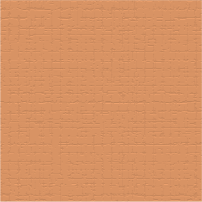

This document has been exported in debug mode.
To scrub animations, click a Y location to set the time window, then move left/right to scrub.
Bitmap images: 2
Animation functions: 2
- name: coffeePath, index: 0, segments: 1, linear segment length: 50.0
- name: iconPath, index: 1, segments: 1, linear segment length: 50.0
Draw functions: 7
- name: background, layers: 1
- name: texture, layers: 1
- name: swirl, layers: 1
- name: cup, layers: 1
- name: coffee, layers: 1
- name: teaser, layers: 1
- name: icon, layers: 1